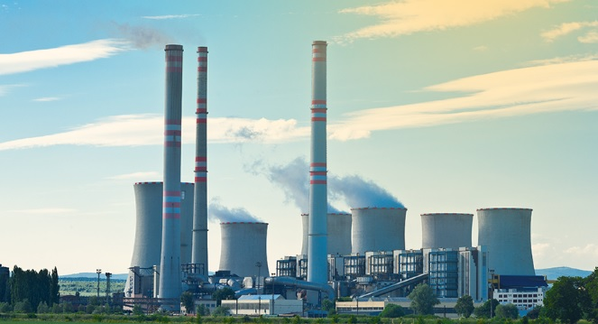

Energia termoelétrica ou termoelétrica é a eletricidade produzida pela conversão de calor (energia térmica) em eletricidade. Os principais tipos de centrais de produção de energia termelétrica são as centrais de combustão, que queimam combustíveis fósseis (petróleo, gás natural, gasolina e outros derivados do petróleo), bem como as centrais de biomassa.
1. Instalações podem ser feitas próximas às regiões de consumo;
Diferentemente de outras fontes de energia, as usinas termelétricas podem ser construídas em regiões próximas às cidades, o que reduz os custos com linhas de transmissão, por exemplo.
2. Construção mais rápida do que das hidrelétricas;
A construção de uma usina termelétrica tem um processo mais rápido do que o de uma usina hidrelétrica, o que é importante quando há a necessidade de suprir uma demanda com mais agilidade.
3. Fonte de energia que atende regiões que não têm outras opções;
Para os locais que não têm água suficiente para a construção de uma usina hidrelétrica ou não têm ventos fortes o suficiente para a instalação de uma usina eólica, por exemplo, as usinas termelétricas são uma alternativa.
1. Liberação de gases poluentes na atmosfera;
A queima de combustíveis fósseis libera muito CO2 na atmosfera, o que contribui para o aumento do efeito estufa e, consequentemente, para o aquecimento global. Assim, a energia termelétrica é muito prejudicial para o meio ambiente.
2. Custo para geração de energia mais elevado
Devido à utilização de combustíveis fósseis no processo de produção de energia, o seu custo é mais elevado, o que afeta os consumidores do mercado flagrados através das bandeiras tarifárias citadas anteriormente.
3. Dependência de recursos finitos;
Os combustíveis fósseis são recursos limitados, por isso são mais caros. Além disso, existem grandes demandas no mundo, por isso é necessário pensar em fontes alternativas de energia para reduzir essa dependência.